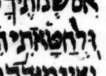

{kind=link}

| וּ֭לְחַטָּאתִ֥י וּֽלְחַטָּאתִ֥י |
# 10:6 | דחי not געיה in μL, says BHQ but not UXLC |
Whereas usually we just baldly and boldly state what (we think) the consensus is, here we will try to explain why the transcription’s divergence from consensus seems so unlikely to reflect the scribal intent.
In BHS, a דחי followed by מרכא is probably found only here and in the following three cases: Ps 86:7 צָ֭רָתִ֥י, Ps 118:5 הַ֭מֵּצַ֥ר, and Ps 139:7 אָ֭נָ֥ה. In those three cases, there is little question about the דחי: the question is only whether the second mark is מרכא or געיה. (In the Ps 118:5 הַ֭מֵּצַ֥ר case, there is also a question of whether there should be a second mark at all.)
In contrast, here in 10:6 the דחי is highly questionable because it follows an אתנח, a sequence unprecedented in the consensus and rare even in BHS, where it is probably found in only two other cases: Ps 115:3 כֹּ֭ל אֲשֶׁר־חָפֵ֣ץ עָשָֽׂה׃ and Ps 119:16 לֹ֭א אֶשְׁכַּ֣ח דְּבָרֶֽךָ׃. In both of those two cases, טרחא is a better transcription of μL.
After אתנח, the consensus sequence here in 10:6 is מרכא and then סילוק: וּֽלְחַטָּאתִ֥י תִדְרֽוֹשׁ׃. After אתנח, this sequence is found about 194 times in poetic verses, about 38 of which are in Job, e.g. 6:12 אִֽם־בְּשָׂרִ֥י נָחֽוּשׁ׃, 7:14 וּֽמֵחֶזְיֹנ֥וֹת תְּבַעֲתַֽנִּי׃, and 8:11 יִשְׂגֶּה־אָ֥חוּ בְלִי־מָֽיִם׃.
This mark was probably transcribed as a דחי ignoring context, using only the mark’s position relative to its letter (early) and its inclination (twisted somewhat counterclockwise from vertical). Although in an ideal world we could transcribe using only such criteria, in practice we must transcribe more charitably, considering context as well. The relevant context includes both the consensus pointing and the likelihood of the non-consensus (quirky) pointing under consideration. Here, a transcription of געיה seems best given that the consensus is געיה and דחי seems very unlikely.
μA (Aleppo) (page 272v, col 2, line 13, word 4):

μY (Cambridge 1753):
